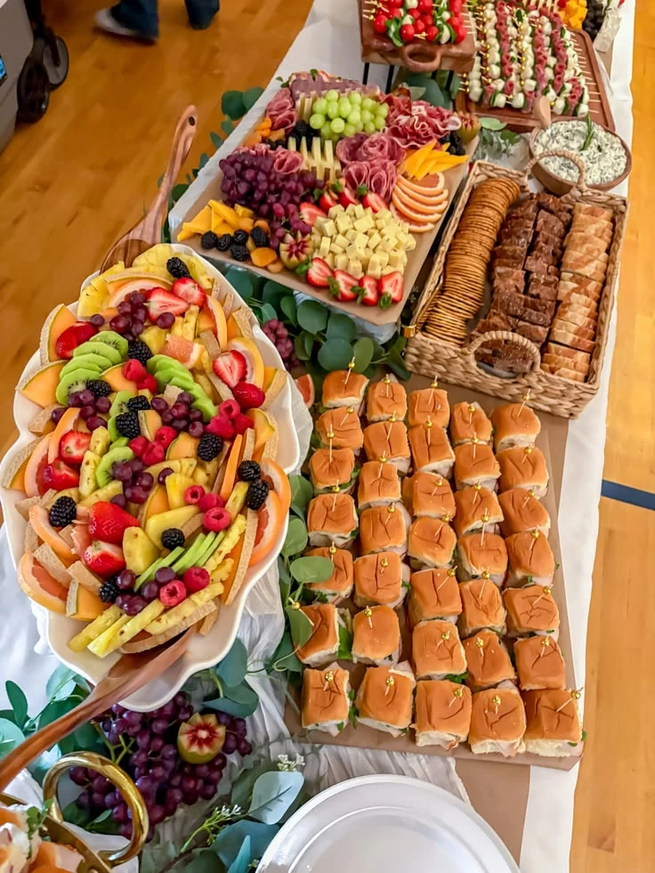

A thoughtful start
Discuss breakfast and coffee arrangements for arrivals and early sessions.
MEETINGS · CONFERENCES · RETREATS
Food and beverage planning for working breakfasts, client meetings, conferences, and retreats across metro Atlanta and Georgia.
Plan your gathering
CONSIDERED FROM THE START
A meeting has its own rhythm. We plan around arrivals, breaks, working sessions, and the room itself—so the food feels like part of the day, rather than an interruption.
PLAN AROUND THE AGENDA
Share the flow of the day. We’ll discuss food and service around the moments that matter.
Breakfast, coffee, and a welcome before the first session.
A refreshment break planned around your available window.
A meal format that suits the room and the pace of the day.
Confirm service end times, clearing, and any collection needs.
A FEW HELPFUL DETAILS
An agenda or outline, the date, venue, guest count, budget, and any known dietary requirements are a helpful starting point.
Yes. List those needs in your inquiry so they can be considered alongside catering and supporting services. The final proposal will confirm the scope.
SOUTHERN CRESCENT HOSPITALITY